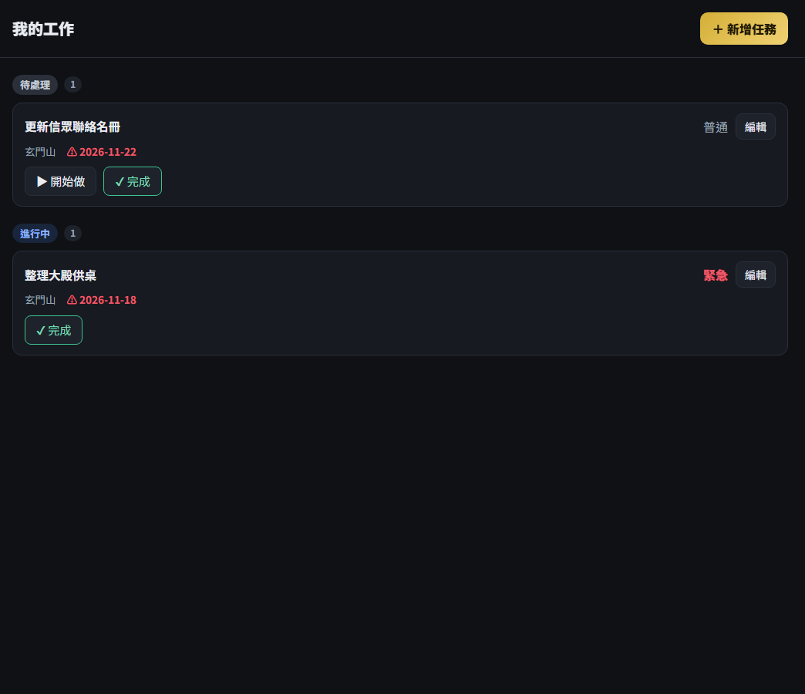
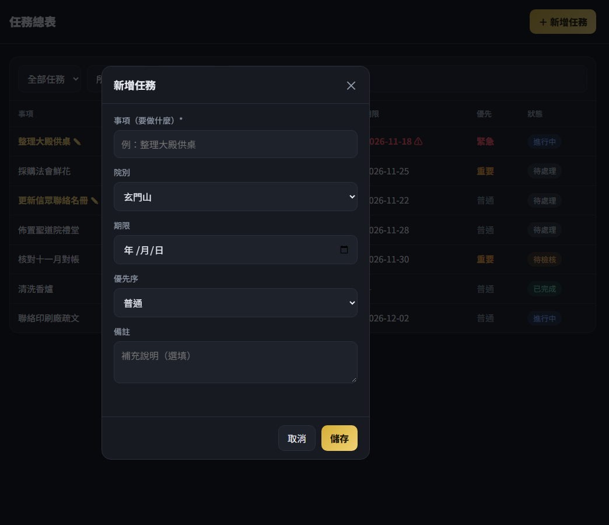

用 AI 做出你自己的工作系統
Notion ＋ Claude 實作課｜2 小時，做完帶走一個能用的成果
適合誰
想把重複的工作交給 AI 處理，卻不知道從哪開始的人，例如長照、行政、小型團隊或個人工作者。不需要會寫程式。
你會帶走什麼
一個你自己工作會用到的 Notion 頁面或模板，加上一套之後能自己重複使用的 Claude 做法。換一個題目，也能照樣做出來。
課程內容（2 小時）
- 0:00–0:15找出最卡的一件事先聊你的實際工作，一起決定這堂課要解決哪一個。
- 0:15–0:45示範Notion 怎麼建資料結構，Claude 怎麼幫你整理、寫文件、規劃流程。
- 0:45–1:30你自己動手做我在旁邊帶，卡住時再協助，由你操作。
- 1:30–1:50整理成模板把成果存成可重複使用的版本。
- 1:50–2:00答疑與下一步回答問題，說明之後可以怎麼延伸。
為什麼可以跟我學
我自己用 Notion、Claude 和 Codex 做了一套能實際運作的派工系統，從規格、實作、測試到上線都走過一遍。課程教的是我實際用過的做法，不是只介紹功能。
課程範例：我自己做出來的派工系統
下面是我用 Notion、Claude 和 Codex 做出的內部派工系統實際畫面（以示範資料呈現）。課程不會要你做同樣大的東西，而是帶你用同樣的方法，做出一個你自己的小版本。




畫面為示範資料，非真實業務內容。
需要準備
- 一件你想處理的實際工作
- 一台能上網的電腦
- Notion 與 Claude 帳號（免費版即可開始）
費用與時間
費用NT$ ＿＿＿（首次學員優惠價 NT$ ＿＿＿）
時長2 小時
方式線上或約定地點
時段＿＿＿＿＿＿＿＿
延伸進階（另開）
想把流程做成自動化、或用 Codex 寫工具的人，可以在基礎課之後另外報名。
不適合：只想問某個按鈕怎麼按的人，這類問題看官方說明會更快。